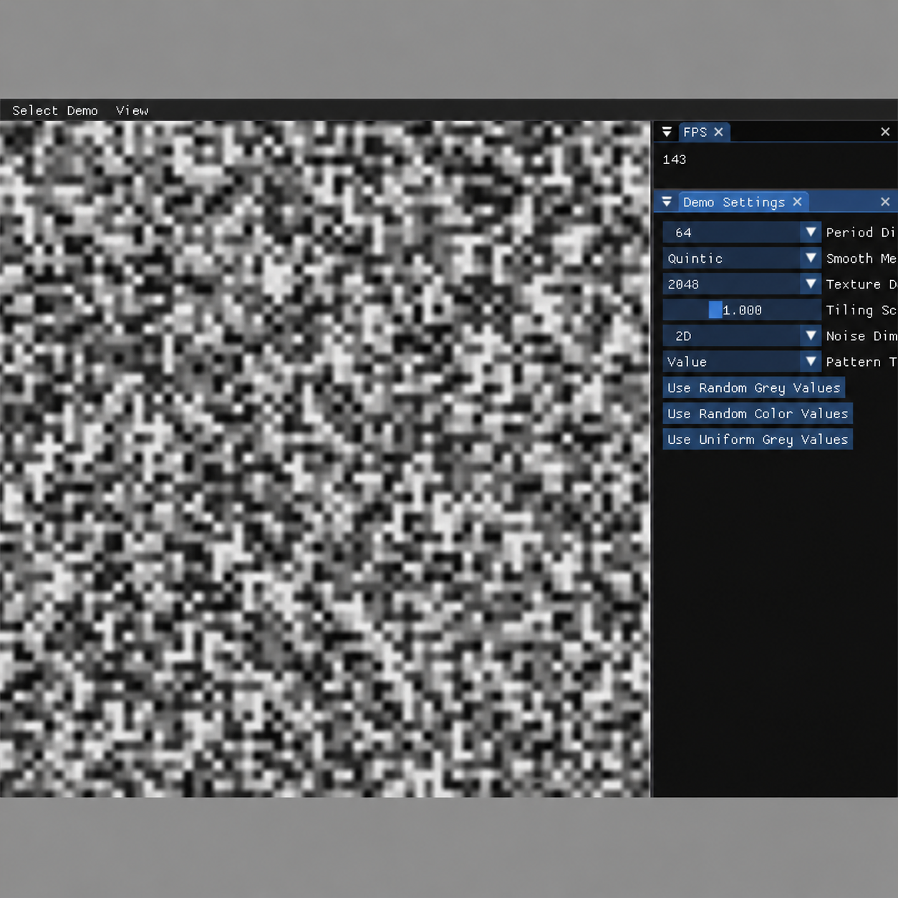

3D Graphics

This project implements a procedural Value Noise system in C++ and visualizes the generated noise as an OpenGL texture. The goal of the assignment was to create smooth, repeatable noise patterns using permutation hashing, interpolation, and adjustable smoothing methods. The demo supports 1D, 2D, and 3D noise evaluation and allows the user to modify the result in real time through ImGui controls.
Value Noise is useful for generating procedural textures such as grayscale noise, colored noise, turbulence, marble, and wood-like patterns. Instead of relying on image files, the texture is generated from random values and mathematical interpolation, making it flexible and fully procedural.
For this assignment, I implemented the core Value Noise algorithm and integrated it into the existing CS250 graphics framework. I added support for 1D, 2D, and 3D noise evaluation, using linear interpolation for 1D, bilinear interpolation for 2D, and trilinear interpolation for 3D. I also implemented multiple smoothing methods, including linear, cosine, smoothstep, and quintic smoothing.
I implemented a permutation hash table to select repeatable random values for each lattice point. This allows the generated noise to tile correctly when the texture is repeated. I also added texture upload functionality so that newly generated RGBA pixel data can be sent to an existing OpenGL texture without recreating the entire texture object every frame.
In the demo interface, I connected ImGui controls for period dimension, smoothing method, texture size, tiling scale, noise dimension, Z input for 3D noise, and pattern type. I also added shader files for displaying the generated texture on a full-screen plane.
The most important part of this assignment was understanding how continuous input coordinates are converted into discrete lattice coordinates. Each input position must be split into a base lattice point, a next lattice point, and an interpolation value. Once this structure was clear, the 1D, 2D, and 3D versions of the algorithm became extensions of the same idea.
Another challenge was making the noise tile seamlessly. To solve this, I used the selected period dimension as the size of the permutation table and wrapped lattice coordinates with a period mask. This made the texture repeat cleanly when the tiling scale was increased.
This project helped me better understand procedural texture generation, interpolation, hashing, and texture updates in OpenGL. It also showed how small algorithmic choices, such as the smoothing function, can noticeably change the final visual result.